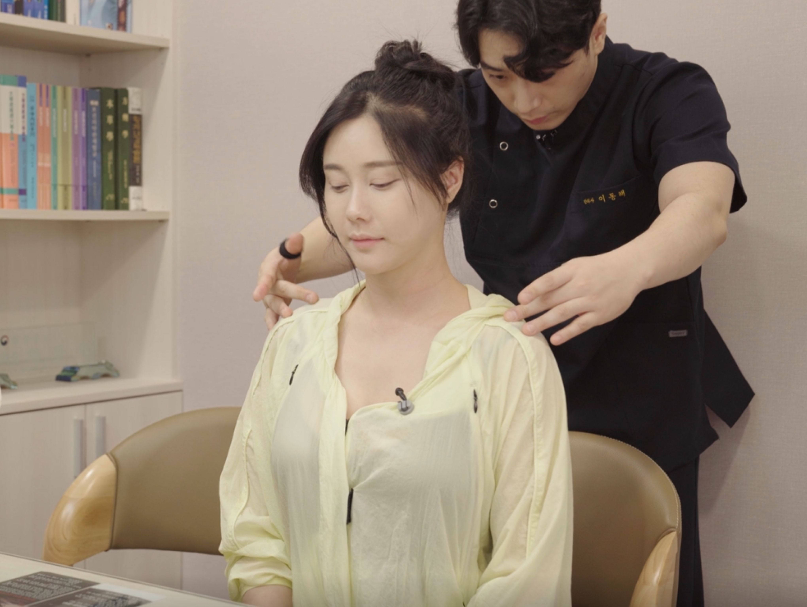
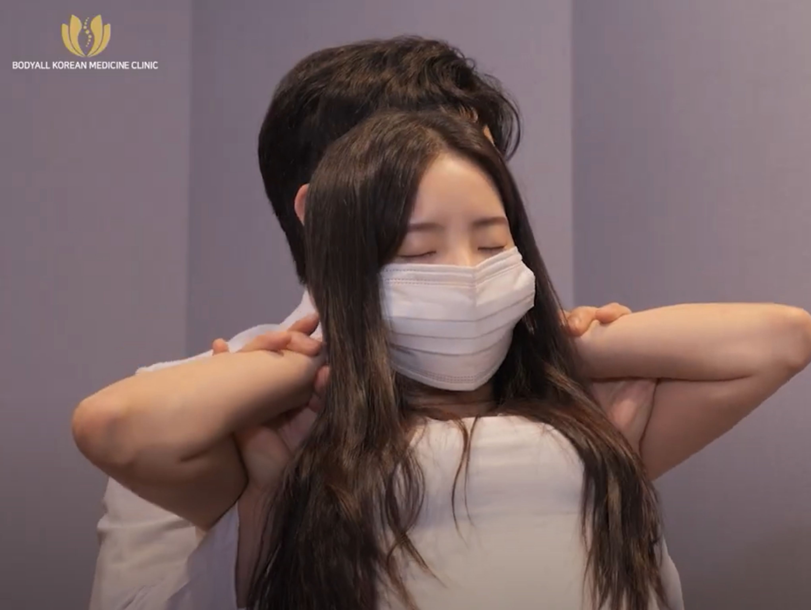

"팔을 들거나 뒤로 뻗기 힘든 어깨 통증, 굽은 등을 펴야 어깨가 열립니다"

💡 수원 인계동 바디올한의원의 30초 핵심 요약
1. 어깨 통증의 진짜 원인은 어깨를 뒤에서 붙잡고 있는 '굽은 등(흉추)'에 있습니다.
2. 등이 굽으면 어깨 근육이 팽팽하게 당겨지는 '장력'이 발생해 염증과 유착을 유발합니다.
3. 바디올은 SART 교정으로 등을 펴고, 도침과 물리치료로 유착을 해결합니다.
1. 혹시 이런 동작이 힘드신가요?
어깨 질환은 단순히 통증만 있는 것이 아니라, 관절의 가동 범위가 줄어드는 것이 특징입니다. 아래 증상을 체크해 보세요.
- 팔을 위로 들어 올릴 때 특정 각도에서 날카로운 통증이 있다.
- 뒷짐을 지거나 등 뒤의 지퍼를 올리는 동작이 불가능하다.
- 밤에 잘 때 아픈 쪽 어깨로 누우면 통증이 심해 잠을 설친다.
- 어깨가 돌처럼 딱딱하게 뭉쳐 있고 목까지 항상 뻐근하다.
2. 메커니즘 분석: "옷을 당긴 채 팔을 돌리면 옷은 찢어집니다"
우리가 등이 구부정한 상태에서 팔을 움직이는 것은, 마치 누군가 내 옷소매를 뒤에서 꽉 붙잡고 있는데 억지로 팔을 돌리는 것과 같습니다.

• 원인(굽은 등): 굽은 등은 어깨뼈를 앞으로 말리게 하여 근육을 팽팽하게 잡아당깁니다(장력 발생).
• 결과(통증): 팽팽해진 근육은 작은 움직임에도 쉽게 마찰이 일어나고, 실밥이 터지듯 염증(오십견, 파열)이 생기게 됩니다.
3. 오십견 vs 회전근개 질환 구분하기
| 구분 | 오십견 | 회전근개 손상 |
|---|---|---|
| 통증 양상 | 전 방향으로 움직임 제한 | 특정 각도에서만 통증 |
| 원인 | 관절낭의 유착 및 노화 | 반복적 마찰 및 파열 |
| 주요 치료 | 도침 박리 + 구조 정렬 | SART 교정 + 봉약침 |
4. 바디올의 통합 치료 솔루션 (Total Care)
옆에서 당기고 있는 손(장력)을 놔주는 구조 정렬이 선행되어야 근본적인 치료가 가능합니다.
• 공간척추교정(SART) / 추나요법: 어깨 관절은 흉추와 경추의 정렬에 직접적인 영향을 받습니다. 굽은 등과 뒤틀린 척추를 교정하여 어깨가 움직일 수 있는 물리적 공간을 확보합니다.
• 도침치료(유착박리술): 굳어버린 관절막과 유착된 조직을 미세 분리하여 가동성을 즉각 회복시킵니다.

• 종합 치료 솔루션: 침, 고농도 봉약침으로 심부 염증을 제거하며 부항과 전자뜸으로 혈액 순환을 촉진합니다.
• 현대 물리치료: ICT와 TENS 기기로 뭉친 근육을 이완시키고 통증 신경을 안정화합니다.

5. 생활 속 자가 관리 가이드
- 시계추 운동: 상체를 숙이고 아픈 팔을 아래로 늘어뜨린 뒤, 부드럽게 원을 그리듯 흔들어줍니다.
- 수건 스트레칭: 수건을 양손으로 잡고 건강한 팔로 아픈 팔을 천천히 위로 끌어당깁니다.